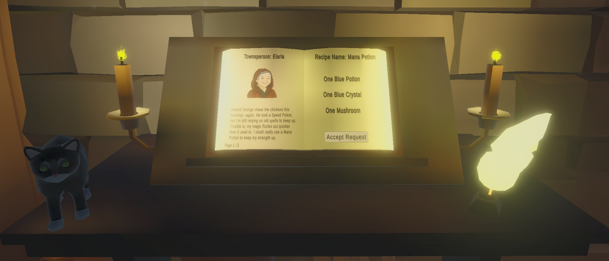
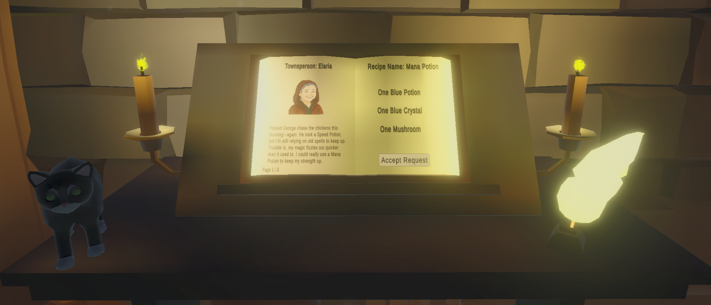

Cameron Patterson
About Me
I’m a game programmer with experience in Unity and Unreal Engine, I have used these game engines to develop various game projects since 2017. Passionate about gameplay systems and tools development.
Projects
Project In Development
In Development
A horror survival game currently in a prototype phase. Set in the vast landscapes of Alaska, you must fish to survive the day and build to survive the night. Currently prototyping and defining project requirements before I determine the game engine.
Burnout - Click To View Game Page
May 2025A short time-based game set in an office. Created with another team member for a week long game jam, however our combined schedules meant we only had around three days to complete the game. Made with Unity & C#.
Sundown - Click To View Game Page
April 2025
A first-person, narrative driven psychological horror made for a year long project in university. Made with Unreal Engine 5 and Blueprints.
Potion Maker VR - Unreleased
April 2025
 

A VR game where you flip through customer requests and create the potion they need. You play as a humble wizard with the desire on helping the village. Made with Unity and C#.
Dungeon Crawler - Unreleased
January 2025A third-person, 3D dungeon crawler prototype with a focus on player combat, enemy AI, traps and puzzles. This was created for an Advanced Game Development module in University. Made with Unreal Engine 5 and Blueprints.
Last Turn - Click To View Game Page
April 2025
This was my first attempt at creating a game, developed as a horror experience during college using Unreal Engine 4. I released it on Game Jolt and received valuable feedback through player comments and YouTube playthroughs, which helped me learn and improve as a developer.
Contact
Email: cameronpatterson77@gmail.com
GitHub: github.com/pattersoncam7